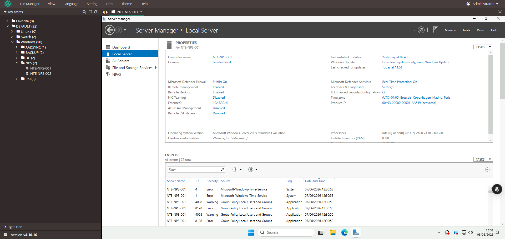
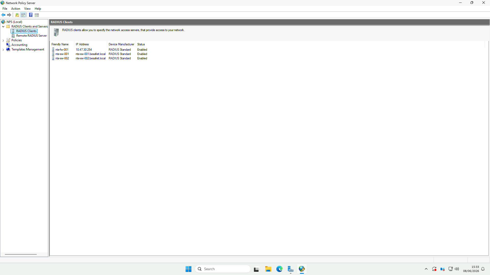
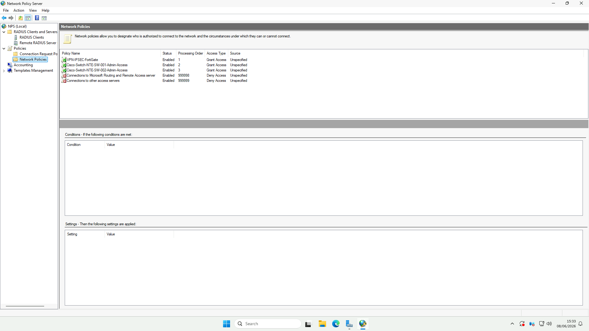
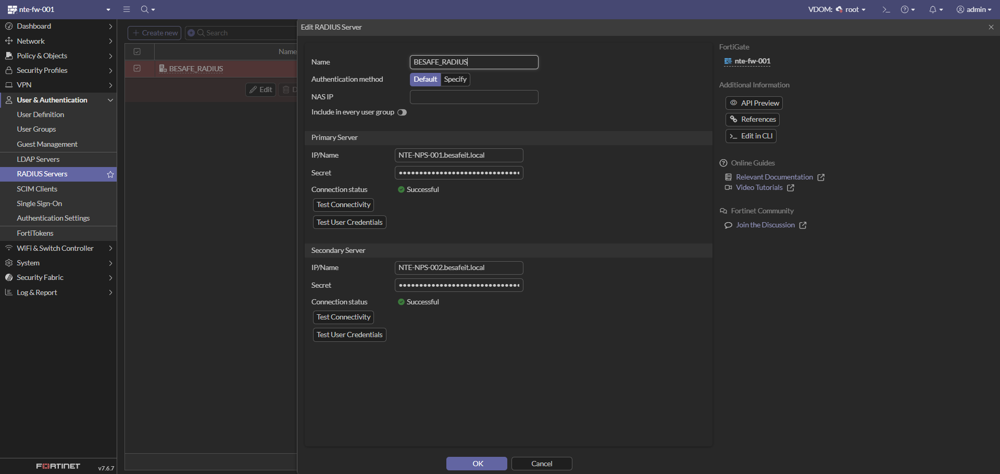
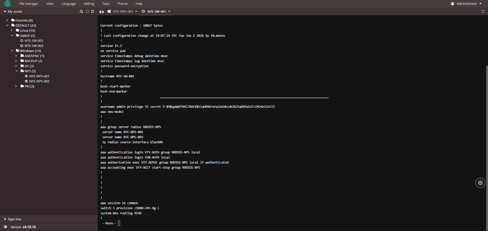

🔑 Authentification centralisée RADIUS (Microsoft NPS)
Cette page documente le service RADIUS de l’infrastructure BESAFE, reposant sur Microsoft NPS (Network Policy Server). Il centralise l’authentification de l’accès VPN (FortiGate) et de l’administration des switches (Cisco), avec les comptes Active Directory
besafeit.local.
⚙️ Détails techniques
| Élément | Valeur |
|---|---|
| Rôle Windows | NPAS – Network Policy and Access Services (NPS) |
| Serveur principal | NTE-NPS-001 (10.47.30.41 – VLAN 30 SRV) |
| Serveur secondaire | NTE-NPS-002 (haute disponibilité) |
| OS | Microsoft Windows Server 2025 Standard |
| Domaine | besafeit.local |
| Protocole | RADIUS (UDP 1812/1813) |
| Clients RADIUS | FortiGate nte-fw-001, switches nte-sw-001 / nte-sw-002 |
🔗 Voir aussi la page Pare-feu FortiWiFi 40F (Étape 5) pour le côté consommateur du VPN.
🖥️ Étape 1 : Serveurs NPS
Objectif : héberger le rôle NPS sur deux serveurs membres du domaine pour assurer la haute disponibilité de l’authentification.
📸 Capture 1 – Serveur NTE-NPS-001

| Paramètre | Valeur |
|---|---|
| Nom | NTE-NPS-001 |
| Domaine | besafeit.local |
| Adresse IP | 10.47.30.41 (VLAN 30 – SRV) |
| OS | Windows Server 2025 Standard |
| Rôle | NPAS (NPS) |
| Processeur / RAM | Intel Xeon E5-2690 v3 / 8 Go |
| Time zone | UTC+01:00 (Bruxelles, Paris…) |
| Defender Firewall / AV | On / Real-Time Protection On |
🔒 Les serveurs
NTE-NPS-001etNTE-NPS-002sont membres du domainebesafeit.local, ce qui permet à NPS d’authentifier directement les comptes et groupes Active Directory. ⚠️ Quelques événements Group Policy / Time-Service sont présents dans le journal — à surveiller (synchro NTP / GPO).
🛰️ Étape 2 : Clients RADIUS
Objectif : déclarer dans NPS les équipements autorisés à envoyer des requêtes d’authentification (NAS).
📸 Capture 2 – RADIUS Clients

| Friendly Name | Adresse | Fabricant | Statut |
|---|---|---|---|
nte-fw-001 |
10.47.30.254 | RADIUS Standard | 🟢 Enabled |
nte-sw-001 |
nte-sw-001.besafeit.local |
RADIUS Standard | 🟢 Enabled |
nte-sw-002 |
nte-sw-002.besafeit.local |
RADIUS Standard | 🟢 Enabled |
💡 Chaque client RADIUS partage un secret avec le NPS (non affiché ici, à ne jamais documenter en clair). ℹ️ Le pare-feu est déclaré via son IP sur le VLAN 30 (
10.47.30.254), les switches via leur nom DNS.
📜 Étape 3 : Stratégies réseau (Network Policies)
Objectif : définir qui est autorisé à se connecter et dans quelles conditions. Les stratégies sont évaluées par ordre de traitement croissant.
📸 Capture 3 – Network Policies

| Ordre | Stratégie | Statut | Accès | Rôle |
|---|---|---|---|---|
| 1 | VPN-IPSEC-FortiGate |
Enabled | ✅ Grant Access | Accès VPN IPSec via le FortiGate |
| 2 | Cisco-Switch-NTE-SW-001-Admin-Access |
Enabled | ✅ Grant Access | Admin du switch SW-001 |
| 3 | Cisco-Switch-NTE-SW-002-Admin-Access |
Enabled | ✅ Grant Access | Admin du switch SW-002 |
| 999998 | Connections to Microsoft RRAS server |
Enabled | ⛔ Deny Access | Refus par défaut (RRAS) |
| 999999 | Connections to other access servers |
Enabled | ⛔ Deny Access | Refus par défaut (catch-all) |
🧱 Logique de filtrage : les 3 premières stratégies autorisent des cas précis (VPN, admin switches) en s’appuyant sur des groupes AD et le client RADIUS source ; tout le reste tombe dans les deux stratégies Deny par défaut (ordre 999998 / 999999). 💡 L’ordre de traitement est essentiel : NPS applique la première stratégie dont les conditions sont remplies.
🔌 Étape 4 : Configuration côté clients
🛡️ 4.1 – FortiGate (nte-fw-001)
📸 Capture 4 – Serveur RADIUS sur le FortiGate

| Paramètre | Valeur |
|---|---|
| Nom | BESAFE_RADIUS |
| Méthode d’auth. | Default |
| Serveur principal | NTE-NPS-001.besafeit.local — 🟢 Successful |
| Serveur secondaire | NTE-NPS-002.besafeit.local — 🟢 Successful |
✅ Les deux serveurs répondent (Test Connectivity = Successful). Le FortiGate utilise ce connecteur pour l’authentification VPN IPSec (stratégie NPS
VPN-IPSEC-FortiGate).
🔧 4.2 – Switch Cisco (NTE-SW-001 / 002)
📸 Capture 5 – Configuration AAA RADIUS du switch

Modèle : Cisco Catalyst C1000-24T-4G-L (IOS 15.2). Extrait de la configuration AAA :
aaa new-model
!
aaa group server radius RADIUS-NPS
server name NTE-NPS-001
server name NTE-NPS-002
ip radius source-interface Vlan100
!
aaa authentication login VTY-AUTH group RADIUS-NPS local
aaa authentication login CON-AUTH local
aaa authorization exec VTY-AUTHZ group RADIUS-NPS local if-authenticated
aaa accounting exec VTY-ACCT start-stop group RADIUS-NPS
!
username admin privilege 15 secret 9 <REDACTED>
Lecture de la configuration :
| Ligne | Signification |
|---|---|
aaa group server radius RADIUS-NPS |
Groupe pointant vers les 2 serveurs NPS (NTE-NPS-001, NTE-NPS-002) |
ip radius source-interface Vlan100 |
Les requêtes RADIUS partent du VLAN 100 (MGT_NET) |
authentication login VTY-AUTH … group RADIUS-NPS local |
Connexion VTY (SSH) → RADIUS, repli local si NPS injoignable |
authentication login CON-AUTH local |
Connexion console → compte local uniquement |
authorization exec VTY-AUTHZ … if-authenticated |
Niveau de privilège attribué après authentification réussie |
accounting exec VTY-ACCT start-stop |
Journalisation des sessions admin vers NPS |
🔒 Le repli
local(fallback) garantit qu’un administrateur peut toujours se connecter en console même si les deux NPS sont indisponibles. ⚠️ Le hash du compteadmin(secret 9 …) est masqué ici : ne jamais publier de secret/hash dans le wiki.
✅ Résumé global
| Étape | Élément | Description | État |
|---|---|---|---|
| 1️⃣ | Serveurs NPS | NTE-NPS-001 / 002 (AD besafeit.local) |
✅ |
| 2️⃣ | Clients RADIUS | FortiGate + 2 switches Cisco | ✅ |
| 3️⃣ | Network Policies | VPN + admin switches (Grant) + Deny par défaut | ✅ |
| 4️⃣ | FortiGate | Connecteur BESAFE_RADIUS (HA, testé OK) |
✅ |
| 5️⃣ | Switches Cisco | AAA RADIUS-NPS + repli local |
✅ |